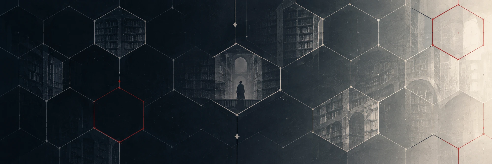

Inglés → español neutro · EPUB, SRT
Lee en español lo que solo existe en inglés.
Traducción de libros y subtítulos al español, coherente de la primera página a la última: los nombres no cambian entre capítulos y el registro no deriva.
Gratis · Código abierto (MIT) · Windows 10/11

Ficha 01
Qué hace
Tú eliges el modelo de lenguaje, desde una API de frontera hasta uno local, gratis y sin conexión. borgésica se ocupa de que el resultado sea consistente de punta a punta.
- 01
Glosario revisable
Nombres y términos recurrentes se traducen siempre igual. Lo revisas y lo bloqueas antes de traducir.
- 02
Narrador por capítulo
Quién dice «yo» queda fijado por ti, no inventado fragmento a fragmento.
- 03
Costo conocido de antemano
Estimación previa y tope de presupuesto, antes de gastar nada.
- 04
Reanudable
Si se corta a mitad de libro, retoma sin volver a traducir ni a pagar lo ya hecho.
- 05
Formato intacto
Entra un EPUB y sale un EPUB válido, con capítulos, formato e imágenes.
Ficha 02
Cómo se usa
- 01
Archivo
Elige el libro o los subtítulos y el modelo.
- 02
Estimación
Ves el costo antes de traducir una sola palabra.
- 03
Glosario
Revisas y bloqueas los términos que deben mantenerse.
- 04
Traducción
Progreso en vivo. El resultado se guarda en tu carpeta
Borgesica.
borgésica no incluye ningún servicio de traducción: pagas directamente al proveedor que elijas (Anthropic, DeepSeek, OpenAI, OpenRouter o Gemini). La clave se pide en cada sesión y nunca se guarda en disco. Con Ollama traduces en tu equipo, sin clave y sin coste.
Ficha 03
Instalación
Descarga Borgesica-Setup.exe y ejecútalo. No requiere permisos de administrador.
El instalador aún no está firmado digitalmente, así que Windows puede mostrar «Windows protegió su PC». Pulsa Más información y luego Ejecutar de todas formas. El código completo está publicado: puedes revisarlo o compilarlo tú mismo.
Ficha 04
Límites actuales
- Solo inglés → español neutro.
- PDF: documentos digitales, sin OCR de escaneados.
- No funciona con libros protegidos con DRM.
- Por ahora, solo Windows.